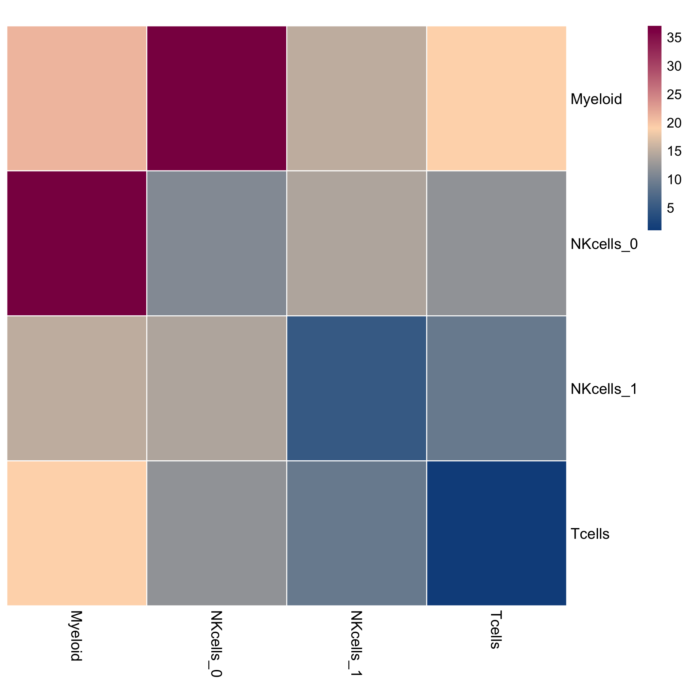
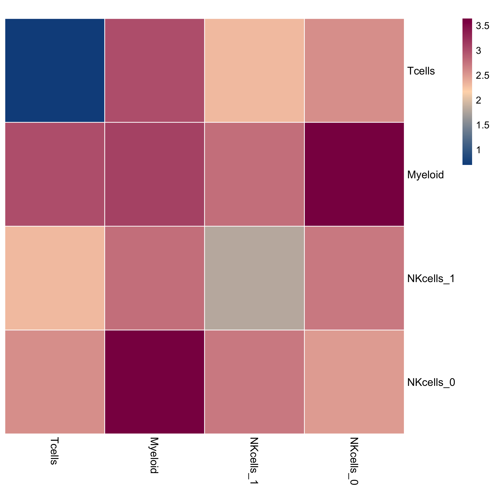

CellPhoneDB example
Last updated: 2020-11-24
Checks: 7 0
Knit directory: interaction-tools/
This reproducible R Markdown analysis was created with workflowr (version 1.6.2). The Checks tab describes the reproducibility checks that were applied when the results were created. The Past versions tab lists the development history.
Great! Since the R Markdown file has been committed to the Git repository, you know the exact version of the code that produced these results.
Great job! The global environment was empty. Objects defined in the global environment can affect the analysis in your R Markdown file in unknown ways. For reproduciblity it’s best to always run the code in an empty environment.
The command set.seed(20191213) was run prior to running the code in the R Markdown file. Setting a seed ensures that any results that rely on randomness, e.g. subsampling or permutations, are reproducible.
Great job! Recording the operating system, R version, and package versions is critical for reproducibility.
Nice! There were no cached chunks for this analysis, so you can be confident that you successfully produced the results during this run.
Great job! Using relative paths to the files within your workflowr project makes it easier to run your code on other machines.
Great! You are using Git for version control. Tracking code development and connecting the code version to the results is critical for reproducibility.
The results in this page were generated with repository version 0333fe3. See the Past versions tab to see a history of the changes made to the R Markdown and HTML files.
Note that you need to be careful to ensure that all relevant files for the analysis have been committed to Git prior to generating the results (you can use wflow_publish or wflow_git_commit). workflowr only checks the R Markdown file, but you know if there are other scripts or data files that it depends on. Below is the status of the Git repository when the results were generated:
Ignored files:
Ignored: .Rhistory
Ignored: .Rproj.user/
Ignored: .drake/
Ignored: data/COMUNET/
Ignored: data/CellChat/
Ignored: data/ICELLNET/
Ignored: data/NicheNet/
Ignored: data/cellphonedb/
Ignored: data/celltalker/
Ignored: output/14-CellChat.Rmd/
Ignored: output/15-talklr.Rmd/
Ignored: output/16-CiteFuse.Rmd/
Ignored: output/17-scTHI.Rmd/
Ignored: output/18-celltalker.Rmd/
Ignored: output/index.Rmd/
Ignored: renv/library/
Ignored: renv/python/
Ignored: renv/staging/
Unstaged changes:
Modified: _drake.R
Note that any generated files, e.g. HTML, png, CSS, etc., are not included in this status report because it is ok for generated content to have uncommitted changes.
These are the previous versions of the repository in which changes were made to the R Markdown (analysis/11-CellPhoneDB.Rmd) and HTML (docs/11-CellPhoneDB.html) files. If you’ve configured a remote Git repository (see ?wflow_git_remote), click on the hyperlinks in the table below to view the files as they were in that past version.
| File | Version | Author | Date | Message |
|---|---|---|---|---|
| html | 3feea4c | Luke Zappia | 2020-05-27 | Add chunk timing to documents |
| html | 9e20a9a | Luke Zappia | 2020-05-08 | Update cellphonedb to v2.1.2 |
| html | 7bd35b2 | Luke Zappia | 2020-05-06 | Rebuild cellphonedb |
| Rmd | 54358bc | Luke Zappia | 2020-05-06 | Fix links to output figures |
| html | 19026df | Luke Zappia | 2020-01-22 | Rebuild |
| Rmd | eb24441 | Luke Zappia | 2020-01-22 | Add output links |
| Rmd | dbeb3cd | Luke Zappia | 2020-01-22 | Add plot to CellPhoneDB |
| Rmd | 2335199 | Luke Zappia | 2020-01-22 | Add input and output to CellPhoneDB |
| Rmd | 1ba0683 | Luke Zappia | 2019-12-13 | Set up CellPhoneDB test |
# Setup document
source(here::here("code", "setup.R"))
# Function dependencies
invisible(drake::readd(download_link))Introduction
In this document we are going to run through the example analysis for the CellPhoneDB tool and have a look at the output it produces. More information about CellPhoneDB can be found at https://www.cellphonedb.org/.
1 Input
CellPhoneDB takes two input files, a table of metadata for each cell and a counts matrix.
1.1 test_meta.txt
This file contains cell type assignments for each cell in the dataset.
meta <- read_tsv(
fs::path(PATHS$cellphonedb_in, "test_meta.txt"),
col_types = cols(
Cell = col_character(),
cell_type = col_character()
)
)
skim(meta)| Name | meta |
| Number of rows | 10 |
| Number of columns | 2 |
| _______________________ | |
| Column type frequency: | |
| character | 2 |
| ________________________ | |
| Group variables | None |
Variable type: character
| skim_variable | n_missing | complete_rate | min | max | empty | n_unique | whitespace |
|---|---|---|---|---|---|---|---|
| Cell | 0 | 1 | 22 | 22 | 0 | 10 | 0 |
| cell_type | 0 | 1 | 6 | 9 | 0 | 4 | 0 |
Chunk time: 0.1 secs
1.2 test_counts.txt
This file contains the count expression matrix.
counts <- read_tsv(
fs::path(PATHS$cellphonedb_in, "test_counts.txt"),
col_types = cols(
.default = col_double(),
Gene = col_character()
)
)
skim(counts)| Name | counts |
| Number of rows | 17198 |
| Number of columns | 11 |
| _______________________ | |
| Column type frequency: | |
| character | 1 |
| numeric | 10 |
| ________________________ | |
| Group variables | None |
Variable type: character
| skim_variable | n_missing | complete_rate | min | max | empty | n_unique | whitespace |
|---|---|---|---|---|---|---|---|
| Gene | 0 | 1 | 15 | 15 | 0 | 17198 | 0 |
Variable type: numeric
| skim_variable | n_missing | complete_rate | mean | sd | p0 | p25 | p50 | p75 | p100 | hist |
|---|---|---|---|---|---|---|---|---|---|---|
| d-pos_AAACCTGAGCAGGTCA | 0 | 1 | 0.14 | 0.50 | 0 | 0 | 0 | 0 | 6.31 | ▇▁▁▁▁ |
| d-pos_AAACCTGGTACCGAGA | 0 | 1 | 0.17 | 0.49 | 0 | 0 | 0 | 0 | 5.86 | ▇▁▁▁▁ |
| d-pos_AAACCTGTCGCCATAA | 0 | 1 | 0.15 | 0.50 | 0 | 0 | 0 | 0 | 6.09 | ▇▁▁▁▁ |
| d-pos_AAACGGGTCAGTTGAC | 0 | 1 | 0.15 | 0.50 | 0 | 0 | 0 | 0 | 6.07 | ▇▁▁▁▁ |
| d-pos_AAAGATGCATTGAGCT | 0 | 1 | 0.19 | 0.46 | 0 | 0 | 0 | 0 | 6.01 | ▇▁▁▁▁ |
| d-pos_AAAGATGTCCAAAGTC | 0 | 1 | 0.16 | 0.50 | 0 | 0 | 0 | 0 | 6.27 | ▇▁▁▁▁ |
| d-pos_AAAGCAAAGAGGACGG | 0 | 1 | 0.14 | 0.46 | 0 | 0 | 0 | 0 | 7.16 | ▇▁▁▁▁ |
| d-pos_AAAGCAACACATTCGA | 0 | 1 | 0.15 | 0.50 | 0 | 0 | 0 | 0 | 6.62 | ▇▁▁▁▁ |
| d-pos_AAAGTAGAGAGCCCAA | 0 | 1 | 0.17 | 0.49 | 0 | 0 | 0 | 0 | 5.86 | ▇▁▁▁▁ |
| d-pos_AAAGTAGCAAGCTGAG | 0 | 1 | 0.17 | 0.49 | 0 | 0 | 0 | 0 | 6.17 | ▇▁▁▁▁ |
Chunk time: 0.25 secs
The small test dataset contains 17198 genes and 17198 cells.
2 Analysis
CellPhoneDB is designed to be a command line tool so we will run the following commands in a BASH shell. Here we run it with the full statistical analysis.
eval "$(conda shell.bash hook)"
conda activate $CONDA_ENV
cellphonedb method statistical_analysis \
--output-path output/11-cellphonedb.Rmd \
--threads 1 \
data/cellphonedb/test_meta.txt \
data/cellphonedb/test_counts.txt[ ][APP][24/11/20-12:21:19][WARNING] Latest local available version is `v2.0.0`, using it
[ ][APP][24/11/20-12:21:19][WARNING] User selected downloaded database `v2.0.0` is available, using it
[ ][CORE][24/11/20-12:21:19][INFO] Initializing SqlAlchemy CellPhoneDB Core
[ ][CORE][24/11/20-12:21:19][INFO] Using custom database at /Users/luke.zappia/.cpdb/releases/v2.0.0/cellphone.db
[ ][APP][24/11/20-12:21:19][INFO] Launching Method cpdb_statistical_analysis_local_method_launcher
[ ][APP][24/11/20-12:21:19][INFO] Launching Method _set_paths
[ ][APP][24/11/20-12:21:19][WARNING] Output directory (output/11-cellphonedb.Rmd) exist and is not empty. Result can overwrite old results
[ ][APP][24/11/20-12:21:19][INFO] Launching Method _load_meta_counts
[ ][CORE][24/11/20-12:21:19][INFO] Launching Method cpdb_statistical_analysis_launcher
[ ][CORE][24/11/20-12:21:19][INFO] Launching Method _counts_validations
[ ][CORE][24/11/20-12:21:20][INFO] [Cluster Statistical Analysis Simple] Threshold:0.1 Iterations:1000 Debug-seed:-1 Threads:1 Precision:3
[ ][CORE][24/11/20-12:21:20][INFO] Running Simple Prefilters
[ ][CORE][24/11/20-12:21:20][INFO] Running Real Simple Analysis
[ ][CORE][24/11/20-12:21:20][INFO] Running Statistical Analysis
[ ][CORE][24/11/20-12:22:47][INFO] Building Pvalues result
[ ][CORE][24/11/20-12:22:49][INFO] Building Simple results
[ ][CORE][24/11/20-12:22:50][INFO] [Cluster Statistical Analysis Complex] Threshold:0.1 Iterations:1000 Debug-seed:-1 Threads:1 Precision:3
[ ][CORE][24/11/20-12:22:50][INFO] Running Complex Prefilters
[ ][CORE][24/11/20-12:22:51][INFO] Running Real Complex Analysis
[ ][CORE][24/11/20-12:22:51][INFO] Running Statistical Analysis
[ ][CORE][24/11/20-12:24:41][INFO] Building Pvalues result
[ ][CORE][24/11/20-12:24:43][INFO] Building Complex resultsChunk time: 3.47 mins
3 Output
CellPhoneDB produces four output files. Let’s have a look at each of these and see what they contain:
3.1 deconvoluted.txt
According to the CellPhoneDB documentation this file provides additional information about the interacting pairs. Specifically it descibes relationships between genes, complexes and expression in cell types.
deconvoluted <- read_tsv(
fs::path(OUT_DIR, "deconvoluted.txt"),
col_types = cols(
gene_name = col_character(),
uniprot = col_character(),
is_complex = col_logical(),
protein_name = col_character(),
complex_name = col_character(),
id_cp_interaction = col_character(),
Myeloid = col_double(),
NKcells_0 = col_double(),
NKcells_1 = col_double(),
Tcells = col_double()
)
)
skim(deconvoluted)| Name | deconvoluted |
| Number of rows | 483 |
| Number of columns | 10 |
| _______________________ | |
| Column type frequency: | |
| character | 5 |
| logical | 1 |
| numeric | 4 |
| ________________________ | |
| Group variables | None |
Variable type: character
| skim_variable | n_missing | complete_rate | min | max | empty | n_unique | whitespace |
|---|---|---|---|---|---|---|---|
| gene_name | 0 | 1.00 | 2 | 9 | 0 | 183 | 0 |
| uniprot | 0 | 1.00 | 4 | 7 | 0 | 183 | 0 |
| protein_name | 0 | 1.00 | 4 | 11 | 0 | 183 | 0 |
| complex_name | 277 | 0.43 | 10 | 17 | 0 | 17 | 0 |
| id_cp_interaction | 0 | 1.00 | 15 | 15 | 0 | 190 | 0 |
Variable type: logical
| skim_variable | n_missing | complete_rate | mean | count |
|---|---|---|---|---|
| is_complex | 0 | 1 | 0.43 | FAL: 277, TRU: 206 |
Variable type: numeric
| skim_variable | n_missing | complete_rate | mean | sd | p0 | p25 | p50 | p75 | p100 | hist |
|---|---|---|---|---|---|---|---|---|---|---|
| Myeloid | 0 | 1 | 0.57 | 0.90 | 0 | 0.00 | 0.00 | 1.13 | 4.01 | ▇▂▁▁▁ |
| NKcells_0 | 0 | 1 | 0.78 | 0.86 | 0 | 0.09 | 0.35 | 1.41 | 4.22 | ▇▂▂▁▁ |
| NKcells_1 | 0 | 1 | 0.63 | 0.82 | 0 | 0.00 | 0.36 | 1.16 | 4.61 | ▇▂▁▁▁ |
| Tcells | 0 | 1 | 0.71 | 1.02 | 0 | 0.00 | 0.00 | 1.95 | 4.26 | ▇▁▂▁▁ |
Chunk time: 0.12 secs
3.2 means.txt
This file contains mean values for each ligand-receptor interaction.
means <- read_tsv(
fs::path(OUT_DIR, "means.txt"),
col_types = cols(
.default = col_double(),
id_cp_interaction = col_character(),
interacting_pair = col_character(),
partner_a = col_character(),
partner_b = col_character(),
gene_a = col_character(),
gene_b = col_character(),
secreted = col_logical(),
receptor_a = col_logical(),
receptor_b = col_logical(),
annotation_strategy = col_character(),
is_integrin = col_logical()
)
)
skim(means)| Name | means |
| Number of rows | 190 |
| Number of columns | 27 |
| _______________________ | |
| Column type frequency: | |
| character | 7 |
| logical | 4 |
| numeric | 16 |
| ________________________ | |
| Group variables | None |
Variable type: character
| skim_variable | n_missing | complete_rate | min | max | empty | n_unique | whitespace |
|---|---|---|---|---|---|---|---|
| id_cp_interaction | 0 | 1.00 | 15 | 15 | 0 | 190 | 0 |
| interacting_pair | 0 | 1.00 | 7 | 24 | 0 | 190 | 0 |
| partner_a | 0 | 1.00 | 11 | 25 | 0 | 116 | 0 |
| partner_b | 0 | 1.00 | 13 | 21 | 0 | 81 | 0 |
| gene_a | 9 | 0.95 | 15 | 15 | 0 | 109 | 0 |
| gene_b | 94 | 0.51 | 15 | 15 | 0 | 71 | 0 |
| annotation_strategy | 0 | 1.00 | 3 | 28 | 0 | 13 | 0 |
Variable type: logical
| skim_variable | n_missing | complete_rate | mean | count |
|---|---|---|---|---|
| secreted | 0 | 1 | 0.73 | TRU: 138, FAL: 52 |
| receptor_a | 0 | 1 | 0.33 | FAL: 127, TRU: 63 |
| receptor_b | 0 | 1 | 0.29 | FAL: 135, TRU: 55 |
| is_integrin | 0 | 1 | 0.49 | FAL: 96, TRU: 94 |
Variable type: numeric
| skim_variable | n_missing | complete_rate | mean | sd | p0 | p25 | p50 | p75 | p100 | hist |
|---|---|---|---|---|---|---|---|---|---|---|
| Myeloid|Myeloid | 0 | 1 | 0.23 | 0.60 | 0 | 0 | 0 | 0.00 | 2.70 | ▇▁▁▁▁ |
| Myeloid|NKcells_0 | 0 | 1 | 0.40 | 0.70 | 0 | 0 | 0 | 0.72 | 2.70 | ▇▂▁▁▁ |
| Myeloid|NKcells_1 | 0 | 1 | 0.30 | 0.64 | 0 | 0 | 0 | 0.00 | 2.69 | ▇▁▁▁▁ |
| Myeloid|Tcells | 0 | 1 | 0.20 | 0.62 | 0 | 0 | 0 | 0.00 | 2.94 | ▇▁▁▁▁ |
| NKcells_0|Myeloid | 0 | 1 | 0.22 | 0.52 | 0 | 0 | 0 | 0.00 | 2.39 | ▇▁▁▁▁ |
| NKcells_0|NKcells_0 | 0 | 1 | 0.34 | 0.59 | 0 | 0 | 0 | 0.51 | 2.73 | ▇▂▁▁▁ |
| NKcells_0|NKcells_1 | 0 | 1 | 0.29 | 0.60 | 0 | 0 | 0 | 0.29 | 2.80 | ▇▁▁▁▁ |
| NKcells_0|Tcells | 0 | 1 | 0.18 | 0.50 | 0 | 0 | 0 | 0.00 | 2.65 | ▇▁▁▁▁ |
| NKcells_1|Myeloid | 0 | 1 | 0.13 | 0.45 | 0 | 0 | 0 | 0.00 | 2.36 | ▇▁▁▁▁ |
| NKcells_1|NKcells_0 | 0 | 1 | 0.25 | 0.59 | 0 | 0 | 0 | 0.00 | 2.86 | ▇▁▁▁▁ |
| NKcells_1|NKcells_1 | 0 | 1 | 0.21 | 0.58 | 0 | 0 | 0 | 0.00 | 2.93 | ▇▁▁▁▁ |
| NKcells_1|Tcells | 0 | 1 | 0.13 | 0.47 | 0 | 0 | 0 | 0.00 | 2.61 | ▇▁▁▁▁ |
| Tcells|Myeloid | 0 | 1 | 0.13 | 0.47 | 0 | 0 | 0 | 0.00 | 2.56 | ▇▁▁▁▁ |
| Tcells|NKcells_0 | 0 | 1 | 0.21 | 0.56 | 0 | 0 | 0 | 0.00 | 2.88 | ▇▁▁▁▁ |
| Tcells|NKcells_1 | 0 | 1 | 0.18 | 0.56 | 0 | 0 | 0 | 0.00 | 2.95 | ▇▁▁▁▁ |
| Tcells|Tcells | 0 | 1 | 0.07 | 0.36 | 0 | 0 | 0 | 0.00 | 2.33 | ▇▁▁▁▁ |
Chunk time: 0.21 secs
It includes information about each ligand-receptor pair as well as scores for each pair of cell types.
3.3 pvalues.txt
This file is similar to means.txt but contains p-values from the statistical test instead of scores.
pvalues <- read_tsv(
fs::path(OUT_DIR, "pvalues.txt"),
col_types = cols(
.default = col_double(),
id_cp_interaction = col_character(),
interacting_pair = col_character(),
partner_a = col_character(),
partner_b = col_character(),
gene_a = col_character(),
gene_b = col_character(),
secreted = col_logical(),
receptor_a = col_logical(),
receptor_b = col_logical(),
annotation_strategy = col_character(),
is_integrin = col_logical()
)
)
skim(pvalues)| Name | pvalues |
| Number of rows | 190 |
| Number of columns | 27 |
| _______________________ | |
| Column type frequency: | |
| character | 7 |
| logical | 4 |
| numeric | 16 |
| ________________________ | |
| Group variables | None |
Variable type: character
| skim_variable | n_missing | complete_rate | min | max | empty | n_unique | whitespace |
|---|---|---|---|---|---|---|---|
| id_cp_interaction | 0 | 1.00 | 15 | 15 | 0 | 190 | 0 |
| interacting_pair | 0 | 1.00 | 7 | 24 | 0 | 190 | 0 |
| partner_a | 0 | 1.00 | 11 | 25 | 0 | 116 | 0 |
| partner_b | 0 | 1.00 | 13 | 21 | 0 | 81 | 0 |
| gene_a | 9 | 0.95 | 15 | 15 | 0 | 109 | 0 |
| gene_b | 94 | 0.51 | 15 | 15 | 0 | 71 | 0 |
| annotation_strategy | 0 | 1.00 | 3 | 28 | 0 | 13 | 0 |
Variable type: logical
| skim_variable | n_missing | complete_rate | mean | count |
|---|---|---|---|---|
| secreted | 0 | 1 | 0.73 | TRU: 138, FAL: 52 |
| receptor_a | 0 | 1 | 0.33 | FAL: 127, TRU: 63 |
| receptor_b | 0 | 1 | 0.29 | FAL: 135, TRU: 55 |
| is_integrin | 0 | 1 | 0.49 | FAL: 96, TRU: 94 |
Variable type: numeric
| skim_variable | n_missing | complete_rate | mean | sd | p0 | p25 | p50 | p75 | p100 | hist |
|---|---|---|---|---|---|---|---|---|---|---|
| Myeloid|Myeloid | 0 | 1 | 0.87 | 0.33 | 0.00 | 1.00 | 1 | 1 | 1 | ▁▁▁▁▇ |
| Myeloid|NKcells_0 | 0 | 1 | 0.77 | 0.39 | 0.00 | 0.56 | 1 | 1 | 1 | ▂▁▁▁▇ |
| Myeloid|NKcells_1 | 0 | 1 | 0.83 | 0.34 | 0.00 | 1.00 | 1 | 1 | 1 | ▁▁▁▁▇ |
| Myeloid|Tcells | 0 | 1 | 0.91 | 0.28 | 0.00 | 1.00 | 1 | 1 | 1 | ▁▁▁▁▇ |
| NKcells_0|Myeloid | 0 | 1 | 0.85 | 0.33 | 0.00 | 1.00 | 1 | 1 | 1 | ▁▁▁▁▇ |
| NKcells_0|NKcells_0 | 0 | 1 | 0.71 | 0.38 | 0.00 | 0.34 | 1 | 1 | 1 | ▂▂▁▁▇ |
| NKcells_0|NKcells_1 | 0 | 1 | 0.81 | 0.34 | 0.00 | 0.70 | 1 | 1 | 1 | ▁▁▁▁▇ |
| NKcells_0|Tcells | 0 | 1 | 0.89 | 0.29 | 0.00 | 1.00 | 1 | 1 | 1 | ▁▁▁▁▇ |
| NKcells_1|Myeloid | 0 | 1 | 0.94 | 0.22 | 0.03 | 1.00 | 1 | 1 | 1 | ▁▁▁▁▇ |
| NKcells_1|NKcells_0 | 0 | 1 | 0.87 | 0.29 | 0.00 | 1.00 | 1 | 1 | 1 | ▁▁▁▁▇ |
| NKcells_1|NKcells_1 | 0 | 1 | 0.89 | 0.27 | 0.02 | 1.00 | 1 | 1 | 1 | ▁▁▁▁▇ |
| NKcells_1|Tcells | 0 | 1 | 0.94 | 0.21 | 0.00 | 1.00 | 1 | 1 | 1 | ▁▁▁▁▇ |
| Tcells|Myeloid | 0 | 1 | 0.93 | 0.25 | 0.00 | 1.00 | 1 | 1 | 1 | ▁▁▁▁▇ |
| Tcells|NKcells_0 | 0 | 1 | 0.89 | 0.27 | 0.00 | 1.00 | 1 | 1 | 1 | ▁▁▁▁▇ |
| Tcells|NKcells_1 | 0 | 1 | 0.91 | 0.26 | 0.00 | 1.00 | 1 | 1 | 1 | ▁▁▁▁▇ |
| Tcells|Tcells | 0 | 1 | 0.97 | 0.15 | 0.00 | 1.00 | 1 | 1 | 1 | ▁▁▁▁▇ |
Chunk time: 0.21 secs
3.4 significant_means.txt
This file contains mean values for signitificant ligand-receptor interactions.
sig_means <- read_tsv(
fs::path(OUT_DIR, "significant_means.txt"),
col_types = cols(
.default = col_double(),
id_cp_interaction = col_character(),
interacting_pair = col_character(),
partner_a = col_character(),
partner_b = col_character(),
gene_a = col_character(),
gene_b = col_character(),
secreted = col_logical(),
receptor_a = col_logical(),
receptor_b = col_logical(),
annotation_strategy = col_character(),
is_integrin = col_logical()
)
)
skim(sig_means)| Name | sig_means |
| Number of rows | 190 |
| Number of columns | 28 |
| _______________________ | |
| Column type frequency: | |
| character | 7 |
| logical | 4 |
| numeric | 17 |
| ________________________ | |
| Group variables | None |
Variable type: character
| skim_variable | n_missing | complete_rate | min | max | empty | n_unique | whitespace |
|---|---|---|---|---|---|---|---|
| id_cp_interaction | 0 | 1.00 | 15 | 15 | 0 | 190 | 0 |
| interacting_pair | 0 | 1.00 | 7 | 24 | 0 | 190 | 0 |
| partner_a | 0 | 1.00 | 11 | 25 | 0 | 116 | 0 |
| partner_b | 0 | 1.00 | 13 | 21 | 0 | 81 | 0 |
| gene_a | 9 | 0.95 | 15 | 15 | 0 | 109 | 0 |
| gene_b | 94 | 0.51 | 15 | 15 | 0 | 71 | 0 |
| annotation_strategy | 0 | 1.00 | 3 | 28 | 0 | 13 | 0 |
Variable type: logical
| skim_variable | n_missing | complete_rate | mean | count |
|---|---|---|---|---|
| secreted | 0 | 1 | 0.73 | TRU: 138, FAL: 52 |
| receptor_a | 0 | 1 | 0.33 | FAL: 127, TRU: 63 |
| receptor_b | 0 | 1 | 0.29 | FAL: 135, TRU: 55 |
| is_integrin | 0 | 1 | 0.49 | FAL: 96, TRU: 94 |
Variable type: numeric
| skim_variable | n_missing | complete_rate | mean | sd | p0 | p25 | p50 | p75 | p100 | hist |
|---|---|---|---|---|---|---|---|---|---|---|
| rank | 0 | 1.00 | 0.64 | 0.55 | 0.06 | 0.06 | 0.69 | 1.19 | 1.19 | ▇▁▁▁▇ |
| Myeloid|Myeloid | 169 | 0.11 | 1.65 | 0.49 | 1.13 | 1.39 | 1.55 | 1.94 | 2.70 | ▇▂▃▂▂ |
| Myeloid|NKcells_0 | 164 | 0.14 | 1.43 | 0.66 | 0.61 | 0.87 | 1.25 | 2.05 | 2.70 | ▇▃▂▆▂ |
| Myeloid|NKcells_1 | 178 | 0.06 | 1.04 | 0.25 | 0.74 | 0.85 | 1.03 | 1.08 | 1.60 | ▆▇▂▂▂ |
| Myeloid|Tcells | 180 | 0.05 | 1.95 | 0.75 | 1.11 | 1.37 | 1.77 | 2.71 | 2.94 | ▇▁▂▂▅ |
| NKcells_0|Myeloid | 179 | 0.06 | 1.18 | 0.43 | 0.61 | 0.92 | 1.11 | 1.43 | 2.00 | ▃▇▂▂▃ |
| NKcells_0|NKcells_0 | 179 | 0.06 | 0.51 | 0.40 | 0.12 | 0.22 | 0.25 | 0.73 | 1.19 | ▇▁▂▁▂ |
| NKcells_0|NKcells_1 | 184 | 0.03 | 1.39 | 0.88 | 0.22 | 0.98 | 1.19 | 1.98 | 2.63 | ▃▇▃▁▇ |
| NKcells_0|Tcells | 182 | 0.04 | 1.12 | 0.56 | 0.59 | 0.81 | 0.96 | 1.27 | 2.34 | ▇▃▂▁▂ |
| NKcells_1|Myeloid | 187 | 0.02 | 1.45 | 0.44 | 0.95 | 1.28 | 1.60 | 1.69 | 1.79 | ▇▁▁▇▇ |
| NKcells_1|NKcells_0 | 182 | 0.04 | 1.20 | 1.00 | 0.22 | 0.30 | 0.98 | 1.81 | 2.86 | ▇▅▂▁▅ |
| NKcells_1|NKcells_1 | 185 | 0.03 | 1.49 | 0.95 | 0.39 | 0.87 | 1.25 | 2.48 | 2.48 | ▃▃▃▁▇ |
| NKcells_1|Tcells | 184 | 0.03 | 1.62 | 0.61 | 0.76 | 1.37 | 1.52 | 1.96 | 2.50 | ▃▃▇▃▃ |
| Tcells|Myeloid | 181 | 0.05 | 1.72 | 0.52 | 1.11 | 1.37 | 1.67 | 2.04 | 2.56 | ▇▇▁▂▅ |
| Tcells|NKcells_0 | 186 | 0.02 | 0.97 | 0.31 | 0.62 | 0.79 | 0.94 | 1.12 | 1.36 | ▇▇▇▁▇ |
| Tcells|NKcells_1 | 187 | 0.02 | 2.04 | 0.53 | 1.46 | 1.81 | 2.17 | 2.33 | 2.50 | ▇▁▁▇▇ |
| Tcells|Tcells | 189 | 0.01 | 1.10 | NA | 1.10 | 1.10 | 1.10 | 1.10 | 1.10 | ▁▁▇▁▁ |
Chunk time: 0.21 secs
4 Plotting
CellPhoneDB also has some plotting functions.
4.1 Dotplot
eval "$(conda shell.bash hook)"
conda activate $CONDA_ENV
cellphonedb plot dot_plot \
--means-path output/11-CellPhoneDB.Rmd/means.txt \
--pvalues-path output/11-CellPhoneDB.Rmd/pvalues.txt \
--output-path output/11-CellPhoneDB.Rmd/ \
--output-name dotplot.pngChunk time: 8.94 secs
This is a dotplot of the mean expression of the ligand-receptor pair in each pair of cell types.
fig_dir <- here("docs", "figure", DOCNAME)
fs::dir_create(fig_dir)
fs::file_copy(
fs::path(OUT_DIR, "dotplot.png"),
fs::path(fig_dir, "dotplot.png"),
overwrite = TRUE
)
include_graphics(fs::path("figure", DOCNAME, "dotplot.png"), error = FALSE)
| Version | Author | Date |
|---|---|---|
| 3feea4c | Luke Zappia | 2020-05-27 |
| 9e20a9a | Luke Zappia | 2020-05-08 |
| 7bd35b2 | Luke Zappia | 2020-05-06 |
| 54358bc | Luke Zappia | 2020-05-06 |
| 19026df | Luke Zappia | 2020-01-22 |
Chunk time: 0.05 secs
4.2 Heatmap
CellPhoneDB also has a heatmap plotting function. This function also produces some additional output files.
eval "$(conda shell.bash hook)"
conda activate $CONDA_ENV
cellphonedb plot heatmap_plot \
--pvalues-path output/11-CellPhoneDB.Rmd/pvalues.txt \
--output-path output/11-CellPhoneDB.Rmd/ \
--count-name heatmap_counts.png \
--log-name heatmap_logcounts.png \
--count-network-name count_network.txt \
--interaction-count-name interactions_count.txt \
data/cellphonedb/test_meta.txtChunk time: 4.88 secs
4.2.1 Counts
This is a heatmap of the count of interactions between cell types.
fig_dir <- here("docs", "figure", DOCNAME)
fs::dir_create(fig_dir)
fs::file_copy(
fs::path(OUT_DIR, "heatmap_counts.png"),
fs::path(fig_dir, "heatmap_counts.png"),
overwrite = TRUE
)
include_graphics(fs::path("figure", DOCNAME, "heatmap_counts.png"),
error = FALSE)
| Version | Author | Date |
|---|---|---|
| 3feea4c | Luke Zappia | 2020-05-27 |
| 9e20a9a | Luke Zappia | 2020-05-08 |
| 7bd35b2 | Luke Zappia | 2020-05-06 |
| 54358bc | Luke Zappia | 2020-05-06 |
| 19026df | Luke Zappia | 2020-01-22 |
Chunk time: 0.04 secs
4.2.2 Log-counts
This is a heatmap of the log-count of interactions between cell types.
fig_dir <- here("docs", "figure", DOCNAME)
fs::dir_create(fig_dir)
fs::file_copy(
fs::path(OUT_DIR, "heatmap_logcounts.png"),
fs::path(fig_dir, "heatmap_logcounts.png"),
overwrite = TRUE
)
include_graphics(fs::path("figure", DOCNAME, "heatmap_logcounts.png"),
error = FALSE)
| Version | Author | Date |
|---|---|---|
| 3feea4c | Luke Zappia | 2020-05-27 |
| 9e20a9a | Luke Zappia | 2020-05-08 |
| 7bd35b2 | Luke Zappia | 2020-05-06 |
| 54358bc | Luke Zappia | 2020-05-06 |
| 19026df | Luke Zappia | 2020-01-22 |
Chunk time: 0.04 secs
4.2.3 count_network.txt
This file contains a count of the directional interactions between different cell types used to create the heatmaps.
network <- read_tsv(
fs::path(OUT_DIR, "count_network.txt"),
col_types = cols(
SOURCE = col_character(),
TARGET = col_character(),
count = col_double()
)
)
skim(network)| Name | network |
| Number of rows | 16 |
| Number of columns | 3 |
| _______________________ | |
| Column type frequency: | |
| character | 2 |
| numeric | 1 |
| ________________________ | |
| Group variables | None |
Variable type: character
| skim_variable | n_missing | complete_rate | min | max | empty | n_unique | whitespace |
|---|---|---|---|---|---|---|---|
| SOURCE | 0 | 1 | 6 | 9 | 0 | 4 | 0 |
| TARGET | 0 | 1 | 6 | 9 | 0 | 4 | 0 |
Variable type: numeric
| skim_variable | n_missing | complete_rate | mean | sd | p0 | p25 | p50 | p75 | p100 | hist |
|---|---|---|---|---|---|---|---|---|---|---|
| count | 0 | 1 | 15.62 | 9.78 | 1 | 10.5 | 14 | 19 | 37 | ▂▇▂▁▂ |
Chunk time: 0.07 secs
4.2.4 interactions_count.txt
This file contains a count of total number of interactions for each cell type.
interactions <- read_tsv(
fs::path(OUT_DIR, "interactions_count.txt"),
col_types = cols(
X1 = col_character(),
all_sum = col_double()
)
)
skim(interactions)| Name | interactions |
| Number of rows | 4 |
| Number of columns | 2 |
| _______________________ | |
| Column type frequency: | |
| character | 1 |
| numeric | 1 |
| ________________________ | |
| Group variables | None |
Variable type: character
| skim_variable | n_missing | complete_rate | min | max | empty | n_unique | whitespace |
|---|---|---|---|---|---|---|---|
| X1 | 0 | 1 | 6 | 9 | 0 | 4 | 0 |
Variable type: numeric
| skim_variable | n_missing | complete_rate | mean | sd | p0 | p25 | p50 | p75 | p100 | hist |
|---|---|---|---|---|---|---|---|---|---|---|
| all_sum | 0 | 1 | 62.5 | 24.8 | 41 | 42.5 | 58.5 | 78.5 | 92 | ▇▁▁▃▃ |
Chunk time: 0.06 secs
Summary
Parameters
This table describes parameters used and set in this document.
params <- list(
)
params <- toJSON(params, pretty = TRUE)
kable(fromJSON(params))Chunk time: 0.01 secs
Output files
This table describes the output files produced by this document. Right click and Save Link As… to download the results.
kable(data.frame(
File = c(
download_link("parameters.json", OUT_DIR),
download_link("deconvoluted.txt", OUT_DIR),
download_link("means.txt", OUT_DIR),
download_link("pvalues.txt", OUT_DIR),
download_link("significant_means.txt", OUT_DIR),
download_link("dotplot.png", OUT_DIR),
download_link("heatmap_counts.png", OUT_DIR),
download_link("heatmap_logcounts.png", OUT_DIR),
download_link("count_network.txt", OUT_DIR),
download_link("interactions_count.txt", OUT_DIR)
),
Description = c(
"Parameters set and used in this analysis",
"Deconvoluted output from CellPhoneDB",
"Means output from CellPhoneDB",
"P-values output from CellPhoneDB",
"Significant means output from CellPhoneDB",
"Dotplot plot from CellPhoneDB",
"Counts heatmap plot from CellPhoneDB",
"Log-counts heatmap plot from CellPhoneDB",
"Count network output from CellPhoneDB",
"Interactions count output from CellPhoneDB"
)
))| File | Description |
|---|---|
| parameters.json | Parameters set and used in this analysis |
| deconvoluted.txt | Deconvoluted output from CellPhoneDB |
| means.txt | Means output from CellPhoneDB |
| pvalues.txt | P-values output from CellPhoneDB |
| significant_means.txt | Significant means output from CellPhoneDB |
| dotplot.png | Dotplot plot from CellPhoneDB |
| heatmap_counts.png | Counts heatmap plot from CellPhoneDB |
| heatmap_logcounts.png | Log-counts heatmap plot from CellPhoneDB |
| count_network.txt | Count network output from CellPhoneDB |
| interactions_count.txt | Interactions count output from CellPhoneDB |
{kind=link}
{kind=link}
{kind=link}
Chunk time: 0.08 secs
Session information
sessioninfo::session_info()─ Session info ───────────────────────────────────────────────────────────────
setting value
version R version 4.0.0 (2020-04-24)
os macOS Catalina 10.15.7
system x86_64, darwin17.0
ui X11
language (EN)
collate en_US.UTF-8
ctype en_US.UTF-8
tz Europe/Berlin
date 2020-11-24
─ Packages ───────────────────────────────────────────────────────────────────
! package * version date lib source
P assertthat 0.2.1 2019-03-21 [?] CRAN (R 4.0.0)
P backports 1.1.6 2020-04-05 [?] CRAN (R 4.0.0)
P base64enc 0.1-3 2015-07-28 [?] CRAN (R 4.0.0)
P base64url 1.4 2018-05-14 [?] standard (@1.4)
P broom 0.5.6 2020-04-20 [?] CRAN (R 4.0.0)
P cellranger 1.1.0 2016-07-27 [?] standard (@1.1.0)
P cli 2.0.2 2020-02-28 [?] CRAN (R 4.0.0)
P colorspace 1.4-1 2019-03-18 [?] standard (@1.4-1)
P conflicted * 1.0.4 2019-06-21 [?] standard (@1.0.4)
P crayon 1.3.4 2017-09-16 [?] CRAN (R 4.0.0)
P DBI 1.1.0 2019-12-15 [?] CRAN (R 4.0.0)
P dbplyr 1.4.3 2020-04-19 [?] CRAN (R 4.0.0)
P digest 0.6.25 2020-02-23 [?] CRAN (R 4.0.0)
P dplyr * 0.8.5 2020-03-07 [?] CRAN (R 4.0.0)
P drake 7.12.0 2020-03-25 [?] CRAN (R 4.0.0)
P ellipsis 0.3.0 2019-09-20 [?] CRAN (R 4.0.0)
P evaluate 0.14 2019-05-28 [?] standard (@0.14)
P fansi 0.4.1 2020-01-08 [?] CRAN (R 4.0.0)
P filelock 1.0.2 2018-10-05 [?] CRAN (R 4.0.0)
P forcats * 0.5.0 2020-03-01 [?] CRAN (R 4.0.0)
P fs * 1.4.1 2020-04-04 [?] CRAN (R 4.0.0)
P generics 0.0.2 2018-11-29 [?] standard (@0.0.2)
P ggplot2 * 3.3.0 2020-03-05 [?] CRAN (R 4.0.0)
P git2r 0.27.1 2020-05-03 [?] CRAN (R 4.0.0)
P glue * 1.4.0 2020-04-03 [?] CRAN (R 4.0.0)
P gtable 0.3.0 2019-03-25 [?] standard (@0.3.0)
P haven 2.2.0 2019-11-08 [?] standard (@2.2.0)
P here * 0.1 2017-05-28 [?] standard (@0.1)
P highr 0.8 2019-03-20 [?] standard (@0.8)
P hms 0.5.3 2020-01-08 [?] CRAN (R 4.0.0)
P htmltools 0.5.0 2020-06-16 [?] CRAN (R 4.0.2)
P httpuv 1.5.2 2019-09-11 [?] standard (@1.5.2)
P httr 1.4.1 2019-08-05 [?] standard (@1.4.1)
P igraph 1.2.5 2020-03-19 [?] CRAN (R 4.0.0)
P jsonlite * 1.6.1 2020-02-02 [?] CRAN (R 4.0.0)
P knitr * 1.28 2020-02-06 [?] CRAN (R 4.0.0)
P later 1.0.0 2019-10-04 [?] standard (@1.0.0)
P lattice 0.20-41 2020-04-02 [?] CRAN (R 4.0.0)
P lifecycle 0.2.0 2020-03-06 [?] CRAN (R 4.0.0)
P lubridate 1.7.8 2020-04-06 [?] CRAN (R 4.0.0)
P magrittr 1.5 2014-11-22 [?] CRAN (R 4.0.0)
P Matrix 1.2-18 2019-11-27 [?] standard (@1.2-18)
P memoise 1.1.0 2017-04-21 [?] standard (@1.1.0)
P modelr 0.1.7 2020-04-30 [?] CRAN (R 4.0.0)
P munsell 0.5.0 2018-06-12 [?] standard (@0.5.0)
P nlme 3.1-147 2020-04-13 [?] CRAN (R 4.0.0)
P pander * 0.6.3 2018-11-06 [?] CRAN (R 4.0.0)
P pillar 1.4.4 2020-05-05 [?] CRAN (R 4.0.0)
P pkgconfig 2.0.3 2019-09-22 [?] CRAN (R 4.0.0)
P prettyunits 1.1.1 2020-01-24 [?] CRAN (R 4.0.0)
P progress 1.2.2 2019-05-16 [?] CRAN (R 4.0.0)
P promises 1.1.0 2019-10-04 [?] standard (@1.1.0)
P purrr * 0.3.4 2020-04-17 [?] CRAN (R 4.0.0)
P R6 2.4.1 2019-11-12 [?] CRAN (R 4.0.0)
P Rcpp 1.0.4.6 2020-04-09 [?] CRAN (R 4.0.0)
P readr * 1.3.1 2018-12-21 [?] standard (@1.3.1)
P readxl 1.3.1 2019-03-13 [?] standard (@1.3.1)
P renv 0.12.0 2020-08-28 [?] CRAN (R 4.0.2)
P repr 1.1.0 2020-01-28 [?] CRAN (R 4.0.0)
P reprex 0.3.0 2019-05-16 [?] standard (@0.3.0)
P reticulate 1.16 2020-05-27 [?] CRAN (R 4.0.2)
P rlang 0.4.6 2020-05-02 [?] CRAN (R 4.0.0)
P rmarkdown 2.1 2020-01-20 [?] CRAN (R 4.0.0)
P rprojroot 1.3-2 2018-01-03 [?] CRAN (R 4.0.0)
P rstudioapi 0.11 2020-02-07 [?] CRAN (R 4.0.0)
P rvest 0.3.5 2019-11-08 [?] standard (@0.3.5)
P scales 1.1.0 2019-11-18 [?] standard (@1.1.0)
P sessioninfo 1.1.1 2018-11-05 [?] CRAN (R 4.0.0)
P skimr * 2.1.1 2020-04-16 [?] CRAN (R 4.0.0)
P storr 1.2.1 2018-10-18 [?] standard (@1.2.1)
P stringi 1.4.6 2020-02-17 [?] CRAN (R 4.0.0)
P stringr * 1.4.0 2019-02-10 [?] CRAN (R 4.0.0)
P tibble * 3.0.1 2020-04-20 [?] CRAN (R 4.0.0)
P tidyr * 1.0.3 2020-05-07 [?] CRAN (R 4.0.0)
P tidyselect 1.0.0 2020-01-27 [?] CRAN (R 4.0.0)
P tidyverse * 1.3.0 2019-11-21 [?] standard (@1.3.0)
P txtq 0.2.0 2019-10-15 [?] standard (@0.2.0)
P vctrs 0.2.4 2020-03-10 [?] CRAN (R 4.0.0)
P whisker 0.4 2019-08-28 [?] standard (@0.4)
P withr 2.2.0 2020-04-20 [?] CRAN (R 4.0.0)
P workflowr 1.6.2 2020-04-30 [?] CRAN (R 4.0.0)
P xfun 0.13 2020-04-13 [?] CRAN (R 4.0.0)
P xml2 1.3.2 2020-04-23 [?] CRAN (R 4.0.0)
P yaml 2.2.1 2020-02-01 [?] CRAN (R 4.0.0)
[1] /Users/luke.zappia/Documents/Projects/interaction-tools/renv/library/R-4.0/x86_64-apple-darwin17.0
[2] /private/var/folders/rj/60lhr791617422kqvh0r4vy40000gn/T/RtmpOqMPdA/renv-system-library
[3] /private/var/folders/rj/60lhr791617422kqvh0r4vy40000gn/T/RtmpqYMqtc/renv-system-library
[4] /private/var/folders/rj/60lhr791617422kqvh0r4vy40000gn/T/RtmpHPTw6W/renv-system-library
P ── Loaded and on-disk path mismatch.Chunk time: 0.19 secs